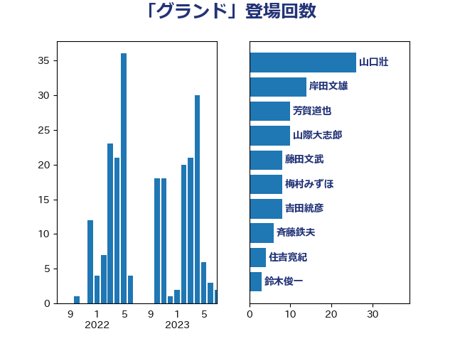

単語「グランド」

| 山口壯 | 自由民主党 | 26 回 |
| 岸田文雄 | 自由民主党 | 14 回 |
| 芳賀道也 | 国民民主党 | 10 回 |
| 山際大志郎 | 自由民主党 | 10 回 |
| 藤田文武 | 日本維新の会 | 8 回 |
| 梅村みずほ | 日本維新の会 | 8 回 |
| 吉田統彦 | 立憲民主党 | 8 回 |
| 斉藤鉄夫 | 公明党 | 6 回 |
| 住吉寛紀 | 日本維新の会 | 4 回 |
| 鈴木俊一 | 自由民主党 | 3 回 |
| 舟山康江 | 国民民主党 | 3 回 |
| 福島伸享 | 無所属 | 3 回 |
| 滝沢求 | 自由民主党 | 3 回 |
| 太田房江 | 自由民主党 | 3 回 |
| 堀場幸子 | 日本維新の会 | 3 回 |
| 國場幸之助 | 自由民主党 | 3 回 |
| 加田裕之 | 自由民主党 | 3 回 |
| 仁木博文 | 無所属 | 3 回 |
| 西村智奈美 | 立憲民主党 | 2 回 |
| 礒崎哲史 | 国民民主党 | 2 回 |
| 梶原大介 | 自由民主党 | 2 回 |
| 本庄知史 | 立憲民主党 | 2 回 |
| 後藤茂之 | 自由民主党 | 2 回 |
| 小倉將信 | 自由民主党 | 2 回 |
| 宮本周司 | 自由民主党 | 2 回 |
| 堂込麻紀子 | 無所属 | 2 回 |
| 加藤鮎子 | 自由民主党 | 2 回 |
| 加藤勝信 | 自由民主党 | 2 回 |
| 佐藤啓 | 自由民主党 | 2 回 |
| 伊藤俊輔 | 立憲民主党 | 2 回 |
| 上田英俊 | 自由民主党 | 2 回 |
| 上田勇 | 公明党 | 2 回 |
| 鬼木誠 | 立憲民主党 | 1 回 |
| 高橋光男 | 公明党 | 1 回 |
| 高木かおり | 日本維新の会 | 1 回 |
| 高市早苗 | 自由民主党 | 1 回 |
| 音喜多駿 | 日本維新の会 | 1 回 |
| 青柳仁士 | 日本維新の会 | 1 回 |
| 鈴木義弘 | 国民民主党 | 1 回 |
| 足立康史 | 日本維新の会 | 1 回 |
| 赤澤亮正 | 自由民主党 | 1 回 |
| 赤木正幸 | 日本維新の会 | 1 回 |
| 谷川とむ | 自由民主党 | 1 回 |
| 谷公一 | 自由民主党 | 1 回 |
| 西村康稔 | 自由民主党 | 1 回 |
| 萩生田光一 | 自由民主党 | 1 回 |
| 舞立昇治 | 自由民主党 | 1 回 |
| 紙智子 | 日本共産党 | 1 回 |
| 篠原孝 | 立憲民主党 | 1 回 |
| 福田昭夫 | 立憲民主党 | 1 回 |
| 福山哲郎 | 立憲民主党 | 1 回 |
| 田村智子 | 日本共産党 | 1 回 |
| 片山大介 | 日本維新の会 | 1 回 |
| 瀬戸隆一 | 自由民主党 | 1 回 |
| 浅田均 | 日本維新の会 | 1 回 |
| 津島淳 | 自由民主党 | 1 回 |
| 武見敬三 | 自由民主党 | 1 回 |
| 横山信一 | 公明党 | 1 回 |
| 森本真治 | 立憲民主党 | 1 回 |
| 森屋隆 | 立憲民主党 | 1 回 |
| 柴田巧 | 日本維新の会 | 1 回 |
| 杉尾秀哉 | 立憲民主党 | 1 回 |
| 日下正喜 | 公明党 | 1 回 |
| 平木大作 | 公明党 | 1 回 |
| 工藤彰三 | 自由民主党 | 1 回 |
| 岬麻紀 | 日本維新の会 | 1 回 |
| 岩谷良平 | 日本維新の会 | 1 回 |
| 山本順三 | 自由民主党 | 1 回 |
| 山本剛正 | 日本維新の会 | 1 回 |
| 小川淳也 | 立憲民主党 | 1 回 |
| 小宮山泰子 | 立憲民主党 | 1 回 |
| 寺田静 | 無所属 | 1 回 |
| 奥下剛光 | 日本維新の会 | 1 回 |
| 保岡宏武 | 自由民主党 | 1 回 |
| 伊藤達也 | 自由民主党 | 1 回 |
| 伊波洋一 | 無所属 | 1 回 |
| 中川康洋 | 公明党 | 1 回 |
| 中島克仁 | 立憲民主党 | 1 回 |
| 上野通子 | 自由民主党 | 1 回 |
| 三浦信祐 | 公明党 | 1 回 |